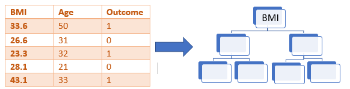

Random Forest is a powerful and one of the most used supervised machine learning algorithm that works on bagging approach. It can be used both for classification and regression problems.
The basic idea on which it works is combining multiple learning models and hence improving the overall result, this accounts for the word ‘forest’ in it’s name which means the combination of different decision trees. Generally, this algorithm produces a great as well as stable result by coping the disadvantages of a single decision tree which justify the word ‘random’ in its name.
In this article we will understand the algorithm working behind along with it’s implementation in python
The problem with decision trees: :
Decision trees study the given data completely to it’s depth. This results in the loss of it’s generalization capabilities and compromise in it’s ‘flexibility’ and therefore, they tend to overfit the data. This is one of the main problem of decision trees as it fits the training data so well that ultimately it starts to give wrong predictions on test data.
Understanding the algorithm working behind :
The working of this amazing algorithm is quite simple. Since random forest works on bootstrap aggregation as discussed above, so firstly the data set is divided into different bits of sample rows and columns and each of the bit of data is trained on a different learning model, i.e. Decision Tree. A noticeable thing here is, the row and column sampling may serve some data to more than one decision tree, there is no thumb rule of making every bit of data separate for each model, it is chosen randomly to bring stability and generalization to out predictions.
Unlike finding the best column to split, the columns are selected randomly in the case of Random forest to maintain a generalized arrangement of data.
Here is a diagrammatic representation of a Random Forest:

Note: In the case of Regression, the result is taken by either avg. or median of all the predictions from the independent decision tree models while in Classification, the predicted class with the most frequency is taken.
Explanation with an Example:
Now let us use the concepts learnt above to build a Random forest step by step by taking an example data for a better understanding.
The diabetes data:
Following is the data to determine weather a patient is diabetic
or not from 4 features.
• Pregnancies: Number of times pregnant
• Glucose: Plasma glucose concentration over 2 hours in an oral
glucose tolerance test
• BMI: Body mass index (weight in kg/(height in m)2)
• Age: Age (years)
*We are taking 4 features and 5 rows for understanding sake.
Step 1:
A random sampling of rows and columns is performed on the dataset, to select int input for the root of a decision tree. Let’s take the following part:
Step 2:
Build a decision tree from the selected features. Say for example, BMI is taken as the root node for the first decision tree.
Step 3:
Choose the no. of trees to be built and go back to Step 1.
There are a lot of decision trees built , but for explanation let
us take 4 trees.
So, we can represent the process till now as follows :
Step 4:
Do a vote from all the trees’ prediction to calculate the final prediction.
From the above table , we can figure out that the Majority vote goes to the prediction ‘1’.
Code Implementation
# Imprting the necessary libraries
import pandas as pd
import numpy as np
import seaborn as sns
#loading the Iris dataset using seaborn
df = sns.load_dataset('iris')
#mapping the target/label values
df['species']=df['species'].map({'setosa':0,'versicolor':1,'virginica':2})
#seperating the feature and label dataframes
X=df.drop(['species'],axis=1)
y=df['species']
from sklearn.model_selection import train_test_split
X_train,X_test,y_train,y_test=train_test_split(X,y, test_size=0.2,random_state=0)
#importing Decision Tree
from sklearn.ensamble import RandomforestClassifier
clf = RandomforestClassifier()
#fitting the classifier
clf.fit(X_train,y_train)
#storing the predictions in y_pred
y_pred = clf.predict(X_test)
#importing metrices
from sklearn.metrics import classification_report, accuracy_score, confusion_matrix
accuracy_score(y_test,y_pred)
print(confusion_matrix(y_test,y_pred))
print(classification_report(y_test,y_pred))
from sklearn.model_selection import GridSearchCV
param_grid = {
'n_estimators': [40,50,100, 200, 300, 500],
'learning_rate' : [0.0001, 0.001, 0.01, 0.1, 1.0],
}
xgclf = XGBClassifier()
grid_search = GridSearchCV(estimator = xgclf, param_grid = param_grid,
cv = 3, n_jobs = -1, verbose = 2)
grid_search.fit(X_train,y_train)
#est parameters
grid_search.best_params_